Algunas novedades de R y su ecosistema, para revisar en la junta del lunes 30 de noviembre.
RStudio y Posit
Actualizaciones de RStudio
Más Git en el editor, división de paneles y R por proyecto
La versión de noviembre incluye algunas novedades sobre Git: el margen del editor marca las líneas agregadas, cambiadas o eliminadas desde el último commit, y también a comparar versiones del documento lado a lado, resaltando las diferencias.
Recientemente se agregó la división del editor (horizontal y vertical).
rig dentro de RStudio
RStudio ahora trae rig incorporado, que permite cambiar entre versiones de R.
Si el proyecto (por ejemplo, vía renv) pide otra versión de R, avisa y ofrece cambiar, instalándola en segundo plano si falta. Si la biblioteca de renv está vacía, ofrece renv::restore().
Se acaba ShinyApps.io
Migración de cuentas a Connect Cloud
La migración automática de cuentas empieza el 28 de enero de 2027 para el plan gratuito. Hay una herramienta de migración: vinculas tu cuenta, eliges las apps y las pruebas antes de finalizar.
RStudio ya marcó RPubs y ShinyApps.io como destinos de publicación obsoletos.
Posit AI Pass
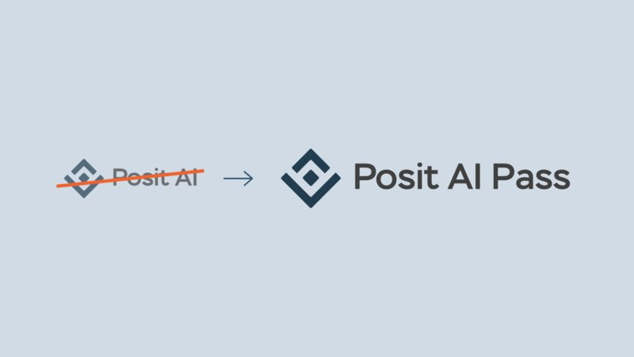
El servicio de modelos se renombra para no confundirlo con Posit Assistant
Posit AI pasó a llamarse Posit AI Pass. Es un servicio que te permite usar distintos modelos de IA (como Claude y modelos de pesos abiertos como GLM 5.3 y Kimi K3) directamente en RStudio. El primer mes cuesta US$5 y luego desde US$20 al mes.
De todas formas, Posit Assistant también funciona con tu propio proveedor de modelos, sin necesidad del Pass.
Shiny
Actualización de Shiny
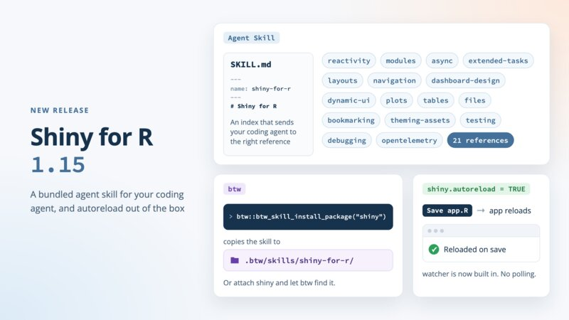
Recarga automática sin polling
watcher 0.2.0 salió en CRAN el 29 de junio como un observador de archivos de uso general, y ahora es el nuevo motor de la recarga automática de Shiny.
Además, Shiny 1.14.0 agregó startApp(), que corre una app sin bloquear la sesión.
Blog post sobre la actualización de Shiny · Blog post de watcher
Paquetes
mizu 0.1.0 llega a CRAN
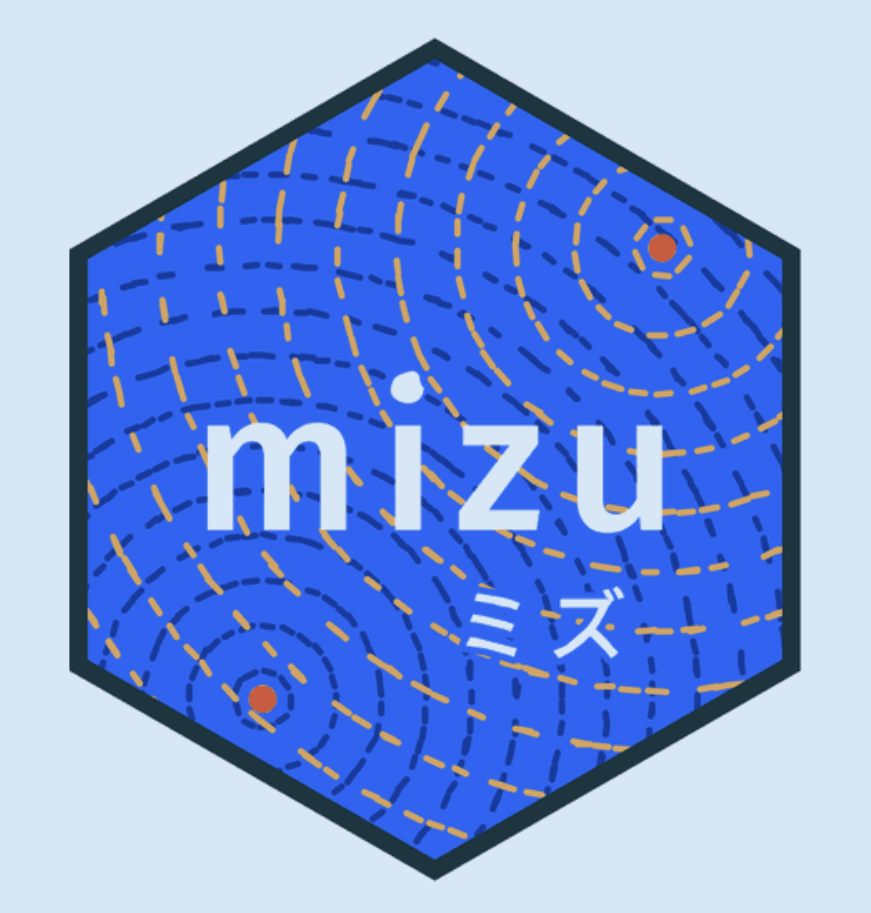
Paralelismo y asincronía con memoria compartida en una sola máquina
mizu es un paquete de R para ejecutar tareas en paralelo y de forma asíncrona en un mismo equipo. En vez de serializar cada tarea y cada resultado por sockets, escribe los datos una vez en memoria compartida y los workers los leen sin copiarlos.
Según las mediciones de sus autores, el ida y vuelta de una tarea trivial baja de unos 100 µs con mirai a 0.8 µs, y vectores, data frames y tablas Arrow se pasan sin copia, incluso entre R y Python.
Opera junto a otros dos paquetes del mismo autor, Charlie Gao:
- mirai reparte tareas entre procesos y, a diferencia de mizu, también puede usar otras máquinas de la red, un clúster HPC o la nube. Por eso el autor aclara que mizu no lo reemplaza.
- coro trae corrutinas a R: funciones
async()conawait(), basadas en el sistema de promises, y generadores conyield(). Es útil para escribir código asíncrono o iterativo sin callbacks.
S7 1.0.0 llega a CRAN
El sistema OOP pensado como sucesor de S3 y S4
S7 1.0.0 llegó a CRAN el 19 de noviembre. Lo diseñó el grupo de trabajo de POO del R Consortium, con representantes de R-Core, Bioconductor y tidyverse/Posit. Requiere R ≥ 4.2.0, y entre los paquetes que ya lo usan están ggplot2, ellmer, vitals y shinychat.
dplyr 1.2.0
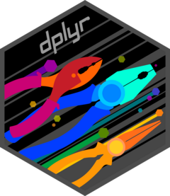
La actualización de dplyr agrega filter_out(), el complemento de filter(), los helpers when_any() y when_all(), y recode_values() y replace_values().
Además, if_else() y case_when() quedaron hasta 30 veces más rápidas.
Paquetes de R chilenos: territorial

Limpieza y validación de datos comunales, provinciales y regionales de Chile
Si trabajas con datos que representen unidades territoriales de Chile, este paquete te ayudará con los nombres oficiales y códigos únicos de regiones, provincias y comunas. Incluye funciones para limpiar nombres de comunas, ayudar a su redacción, convertir entre nombres y códigos, e incluso un juego interactivo de preguntas.
data-dict
Diccionarios de datos en YAML, validables y renderizables
Es una herramienta de línea de comandos, no un paquete de R. data-dict draft perfila los datos y genera un borrador, data-dict validate-data comprueba que los datos cumplan el diccionario, y data-dict render produce una página HTML autocontenida. Incluye un skill para que agentes de IA redacten el diccionario. Hadley Wickham lo mostró en un Data Science Lab en junio, junto con parquet y Claude Code.
Paquetes de R chilenos: poblador
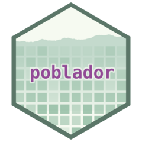
Población oficial para cruzar con tus datos
Entrega tablas de población de fuentes oficiales, como censo_poblacion_2024, y agregar_poblacion(), que infiere si tus datos son comunales, regionales o nacionales y funciona con nombres o códigos únicos territoriales. Depende de territorial y se instala desde R-Universe.
commons
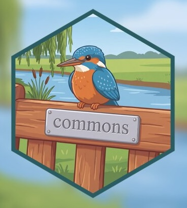
Agentes de análisis de datos con “etiquetas de confianza”
Es un paquete de R para construir agentes de análisis de datos confiables. Los agentes buscan primero en un conjunto de código confiable y, cuando una respuesta usa ese código, la marcan como verificada. Si no lo encuentran, escriben código nuevo respaldado por contexto verificado o dan una respuesta no confiable, y cada respuesta muestra de qué camino proviene. Está construido sobre ellmer, chatlas y shinychat.
webrarian 0.1.0: proyectos de R como sitios web
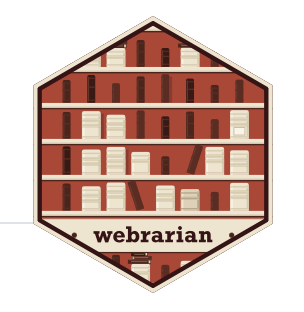
Sesión de R personalizada en el navegador, sin servidor ni instalación
webrarian empaqueta tus paquetes, scripts y datos en un sitio estático. Quien lo abre encuentra una sesión de R con editor, consola, explorador de archivos y panel de gráficos, todo listo. Como no hay servidor de cómputo, cualquier hosting estático sirve.
El paquete usa webR, la versión de R compilada a WebAssembly, y requiere R 4.4 o superior. Por ahora se instala desde GitHub con pak::pak("coatless-wasm/webrarian"). Según su autor, es útil para explorar un proyecto completo y para sitios que deban funcionar sin conexión.
Comunidad
Posit Impact: Paulo Villarroel
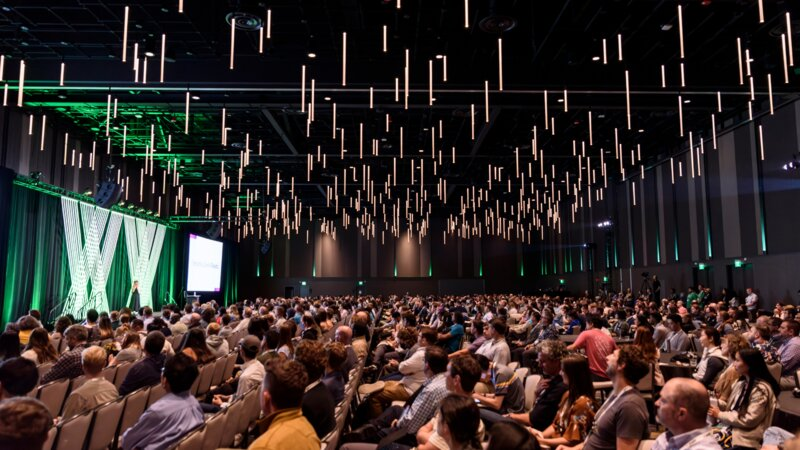
Un chileno ganó en la categoría “Mission-Critical Impact”
Paulo Villarroel Tapia, del Ministerio de Salud de Chile, construyó con R, Positron y Quarto un sistema que cada mes lee unos 450.000 registros clínicos buscando sospecha de cáncer, con un clasificador de tres capas (heurísticas clínicas y embeddings semánticos). Alimenta a los 29 servicios de salud del país y fue la base del Plan Oncológico de 90 días. El modelo señala casos, pero la decisión clínica la toman los equipos locales.
HackeaR (LatinR 2026)
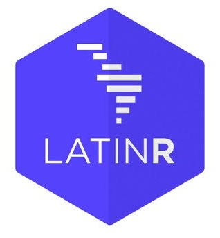
Dos horas de contribuciones a R
Fue el 13 de noviembre en Medellín, con 27 participantes y un tablero con 25 propuestas de trabajo en buenas prácticas, documentación y traducción. Aporta un dato práctico: no hace falta ser experto para contribuir a R.
Eventos
Próximos
useR!2027 en Santiago de Chile
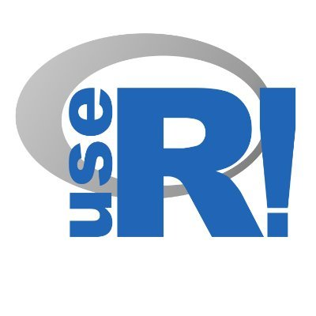
Del 20 al 23 de julio de 2027, en el Centro de Extensión UC
useR! es la conferencia anual de la comunidad de R, sin fines de lucro y organizada por voluntarios con apoyo de la R Foundation. En 2027 llega por primera vez a Sudamérica, a Santiago, y coincide con la décima edición de LatinR. El llamado a propuestas abre el 15 de diciembre de 2026 y cierra el 30 de enero de 2027, y el registro abre el 15 de marzo. La sede es la Facultad de Matemáticas de la Pontificia Universidad Católica de Chile.
Hackatón RSE 2027
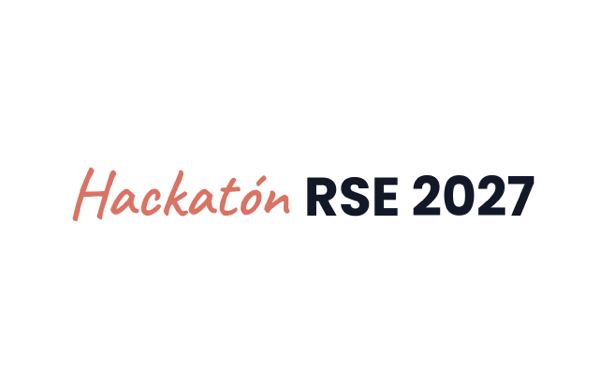
Santiago de Chile, del 12 al 14 de enero de 2027, Campus San Joaquín (UC)
Hackatón para conocer el trabajo de los ingenieros de software de investigación (RSE, por sus siglas en inglés), es decir, quienes desarrollan y mantienen el software que se usa en la investigación científica. Son mini-proyectos en grupo, dirigidos a estudiantes de postgrado, investigadores postdoctorales y personal técnico, con formación en ciencias, humanidades o ingeniería.
Pasados
Posit::conf 2026
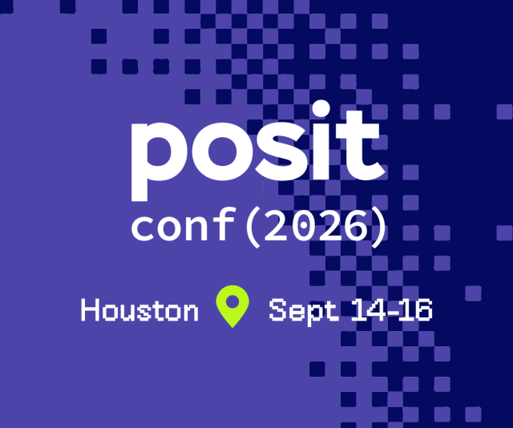
Se presentaron commons, Quarto Hub (edición colaborativa de proyectos Quarto) y los ocho ganadores de los Posit Impact Awards.
R+AI 2026
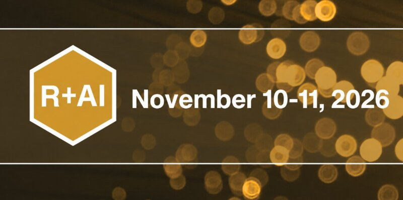
Conferencia del R Consortium sobre R e inteligencia artificial, 10 y 11 de noviembre, en línea
Trató aprendizaje automático y modelos de lenguaje en R, herramientas de programación asistida por IA, despliegues en la industria e investigación en IA responsable. Las keynotes fueron de Andrew Heiss y Mine Çetinkaya-Rundel, y las charlas quedaron grabadas en el canal de YouTube del R Consortium.
V Congreso y XVI Jornadas de Usuarios de R (Tenerife)
Entre el 25 y el 27 de noviembre
El congreso reúne en San Cristóbal de La Laguna, en el Campus de Anchieta de la Universidad de La Laguna, a la comunidad hispanohablante que usa R para análisis de datos, investigación e innovación. Incluye ponencias, talleres, sesiones paralelas y espacios de networking. La jornada del miércoles 25 tiene talleres divulgativos y la sesión inaugural, mientras que el jueves y el viernes se reparten ponencias plenarias, comunicaciones y talleres.
La inscripción presencial, con cupo limitado a 100 plazas, estuvo abierta hasta el 9 de noviembre, con precios especiales para estudiantes y miembros de R Hispano. También hubo un concurso de abstracts con premios al mejor trabajo, al mejor de un autor menor de 30 años y al mejor con datos de Canarias.
LatinR 2026
La novena edición volvió a ser presencial, en Medellín
La conferencia latinoamericana sobre uso de R en I+D se realizó del 11 al 13 de noviembre en la Universidad de Antioquia, Medellín, Colombia. Fue la primera edición presencial desde 2023, tras las versiones virtuales de 2024 y 2025. El programa incluyó tutoriales, charlas y sesiones de diálogo con presentadores, con temas como aplicaciones en academia e industria, machine learning e inteligencia artificial, visualización y investigación reproducible. Las charlas se presentaron en español, portugués e inglés.